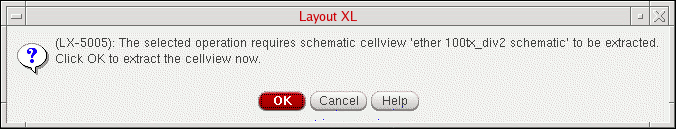
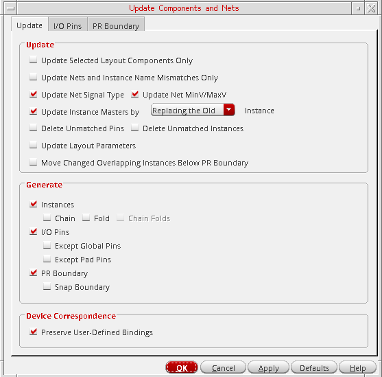

Updating Components and Nets
To update the components and nets in a layout view:
-
From the layout window menu bar, choose Connectivity – Update – Components And Nets.
If the schematic has been changed since it was last extracted, you see a dialog box indicating that it needs to be re-extracted.
 -
Click OK in the message box to extract the schematic and all its reference libraries. (The extracted cellviews are not automatically saved.)
To specify a different extraction behavior, click Cancel in the message box and choose the Check – Hierarchy command from the schematic window menu bar.
When the schematic is extracted, the Update Components and Nets form is displayed.
The form remembers values set previously in the current Virtuoso session. When you open it for the first time, it shows the default values set in your.cdsenvfile. -
Set the options on the form as needed.
See: -
Click OK in the Update Components and Nets Form form.
Layout XL updates the layout design as specified in the form. For detailed information on these settings, see the sections listed in step 3.
If either the Update Instance Masters by Creating a New or the Instances option is selected, clicking Apply creates any ungenerated schematic instances or instances with a master mismatch in the layout. To prevent any new layout instances with the same name as that of an existing layout instance creating a conflict, the new layout instance is renamed with the suffix_1, for exampleI5toI5_1. Clicking Apply a second time or clicking OK, confirms that the names mismatch and require updating. The new layout instance is renamed by removing the suffix,I5_1toI5, and the existing layout instance is renamed by adding the suffix_old, for exampleI5toI5_old.
Limitations of Update Components and Nets
Update Components And Nets does not correct any connectivity errors introduced while defining a many-to-many device binding using the Define Device Correspondence command. These errors are reported by Check Against Source and must be fixed manually using the Define Device Correspondence form.
Troubleshooting Update Components and Nets
Any problems encountered during the update are reported in the CIW and in a Layout XL Info text window. Use
Updating Components and Nets Using SKILL
You can use the SKILL functions to run Update Components And Nets using either of the following methods.
- The lxUpdateComponentsAndNets SKILL function.
-
A combination of the following functions, which let you specify what is generated and updated directly in SKILL.
lxUpdateComponentsAndNetsStart
lxGetAvailablePinLPPs
lxGetPinNets
lxSetBoundaryOptions
lxSetAreaEstimationOptions
lxSetGenerateOptions
lxSetNetPinSpecs
lxSetUpdateOptions
lxUpdateComponentsAndNetsFinish
Related Topics
Update Components and Nets Form
Define Device Correspondence Form
Return to top